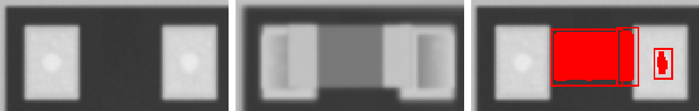
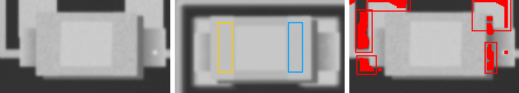
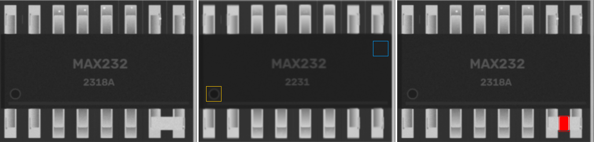
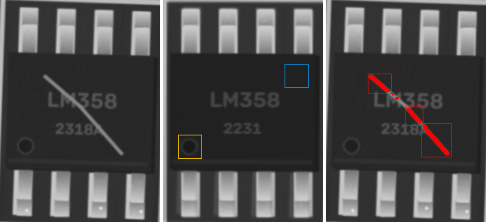

22p · 0603
MISMATCH

ncc 0.946 · ncc_thr 0.6 · mad 10.6 · mad_thr 8.5 · dx_mm 0.023 · dy_mm -0.023 · dtheta_deg -0.0 · anomaly_px 0
100n · 1206
MISMATCH

ncc 0.973 · ncc_thr 0.6 · mad 10.4 · mad_thr 7.6 · dx_mm -0.023 · dy_mm 0.0 · dtheta_deg -0.0 · anomaly_px 0
10n · 0603
MISMATCH

ncc 0.936 · ncc_thr 0.6 · mad 10.8 · mad_thr 8.1 · dx_mm 0.07 · dy_mm 0.0 · dtheta_deg -0.0 · anomaly_px 0
22p · 0603
MISMATCH

ncc 0.961 · ncc_thr 0.6 · mad 10.4 · mad_thr 7.9 · dx_mm 0.023 · dy_mm -0.047 · dtheta_deg -0.0 · anomaly_px 0
22p · 0805
MISMATCH

ncc 0.975 · ncc_thr 0.6 · mad 10.2 · mad_thr 7.7 · dx_mm 0.047 · dy_mm 0.0 · dtheta_deg -0.0 · anomaly_px 0
22p · 0603
MISMATCH

ncc 0.748 · ncc_thr 0.6 · mad 62.5 · mad_thr 7.8 · dx_mm 0.023 · dy_mm 0.0 · dtheta_deg -0.0 · anomaly_px 1255
10n · 0805
MISMATCH

ncc 0.964 · ncc_thr 0.6 · mad 10.3 · mad_thr 7.9 · dx_mm 0.023 · dy_mm 0.047 · dtheta_deg -0.0 · anomaly_px 0
4u7 · 0402
MISMATCH

ncc 0.966 · ncc_thr 0.6 · mad 11.0 · mad_thr 9.3 · dx_mm 0.023 · dy_mm 0.0 · dtheta_deg -0.0 · anomaly_px 0
10u · 0603
MISMATCH

ncc 0.978 · ncc_thr 0.6 · mad 9.6 · mad_thr 7.8 · dx_mm 0.0 · dy_mm 0.047 · dtheta_deg -0.0 · anomaly_px 0
100n · 0402
MISMATCH

ncc 0.963 · ncc_thr 0.6 · mad 11.0 · mad_thr 8.6 · dx_mm 0.0 · dy_mm 0.023 · dtheta_deg -0.0 · anomaly_px 0
Tantalum_Case-A · Tantalum_Case-A
MISMATCH

ncc 0.973 · ncc_thr 0.6 · ncc_180 0.528 · mad 11.1 · mad_thr 7.5 · mad_180 27.4 · dx_mm 0.023 · dy_mm 0.0 · dtheta_deg -0.0 · anomaly_px 0
1u · 0402
MISMATCH

ncc 0.9 · ncc_thr 0.6 · mad 10.2 · mad_thr 9.6 · dx_mm 0.023 · dy_mm 0.07 · dtheta_deg 2 · anomaly_px 0
10u · 0805
MISMATCH

ncc 0.942 · ncc_thr 0.6 · mad 11.2 · mad_thr 7.9 · dx_mm -0.047 · dy_mm 0.047 · dtheta_deg -0.0 · anomaly_px 0
10u · 0603
MISMATCH

ncc 0.852 · ncc_thr 0.6 · mad 10.1 · mad_thr 8.0 · dx_mm -0.047 · dy_mm -0.023 · dtheta_deg -10 · anomaly_px 74
10n · 0603
MISMATCH

ncc 0.972 · ncc_thr 0.6 · mad 10.8 · mad_thr 7.8 · dx_mm 0.023 · dy_mm -0.023 · dtheta_deg -0.0 · anomaly_px 0
22p · 0603
MISMATCH

ncc 0.89 · ncc_thr 0.6 · mad 13.1 · mad_thr 8.6 · dx_mm 0.047 · dy_mm 0.0 · dtheta_deg -0.0 · anomaly_px 0
1u · 0805
MISMATCH

ncc 0.978 · ncc_thr 0.6 · mad 10.4 · mad_thr 7.7 · dx_mm 0.0 · dy_mm 0.0 · dtheta_deg -0.0 · anomaly_px 0
1u · 0402
MISMATCH

ncc 0.935 · ncc_thr 0.6 · mad 10.6 · mad_thr 9.3 · dx_mm -0.047 · dy_mm 0.0 · dtheta_deg -0.0 · anomaly_px 0
1u · 0402
MISMATCH

ncc 0.955 · ncc_thr 0.6 · mad 10.0 · mad_thr 9.2 · dx_mm 0.047 · dy_mm 0.0 · dtheta_deg -0.0 · anomaly_px 0
10u · 0805
MISMATCH

ncc 0.974 · ncc_thr 0.6 · mad 10.2 · mad_thr 7.7 · dx_mm 0.0 · dy_mm -0.023 · dtheta_deg -0.0 · anomaly_px 0
4u7 · 0805
MISMATCH

ncc 0.959 · ncc_thr 0.6 · mad 10.3 · mad_thr 7.6 · dx_mm -0.047 · dy_mm 0.047 · dtheta_deg -2 · anomaly_px 0
10u · 0805
MISMATCH

ncc 0.965 · ncc_thr 0.6 · mad 10.4 · mad_thr 7.7 · dx_mm -0.07 · dy_mm 0.023 · dtheta_deg -0.0 · anomaly_px 0
10n · 0805
MISMATCH

ncc 0.973 · ncc_thr 0.6 · mad 10.6 · mad_thr 7.6 · dx_mm 0.07 · dy_mm 0.0 · dtheta_deg -0.0 · anomaly_px 0
100n · 0805
MISMATCH

ncc 0.976 · ncc_thr 0.6 · mad 10.1 · mad_thr 7.7 · dx_mm 0.0 · dy_mm 0.0 · dtheta_deg -0.0 · anomaly_px 0
22p · 0805
MISMATCH

ncc 0.978 · ncc_thr 0.6 · mad 10.3 · mad_thr 7.7 · dx_mm 0.0 · dy_mm 0.023 · dtheta_deg -0.0 · anomaly_px 0
10u · 0805
MISMATCH

ncc 0.969 · ncc_thr 0.6 · mad 10.0 · mad_thr 7.7 · dx_mm 0.023 · dy_mm -0.023 · dtheta_deg -0.0 · anomaly_px 0
LED_0805 · LED_0805
POLARITY SHIFT

ncc 0.742 · ncc_thr 0.6 · ncc_180 0.887 · mad 4.4 · mad_thr 7.7 · mad_180 4.8 · dx_mm 0.023 · dy_mm 0.977 · dtheta_deg -0.0 · anomaly_px 752
W1 · SOT-23
MISMATCH

ncc 0.989 · ncc_thr 0.6 · ncc_180 0.605 · mad 7.7 · mad_thr 7.4 · mad_180 8.9 · dx_mm 0.0 · dy_mm -0.023 · dtheta_deg -0.0 · anomaly_px 0
220 · 0805
MISMATCH

ncc 0.952 · ncc_thr 0.6 · mad 15.7 · mad_thr 10.9 · dx_mm -0.047 · dy_mm 0.0 · dtheta_deg -0.0 · anomaly_px 0
1k · 0805
MISMATCH

ncc 0.953 · ncc_thr 0.6 · mad 15.8 · mad_thr 12.4 · dx_mm 0.047 · dy_mm 0.047 · dtheta_deg -0.0 · anomaly_px 0
100k · 0603
MISMATCH

ncc 0.958 · ncc_thr 0.6 · mad 14.6 · mad_thr 14.4 · dx_mm 0.023 · dy_mm 0.023 · dtheta_deg -2 · anomaly_px 0
0R · 0805
MISMATCH

ncc 0.958 · ncc_thr 0.6 · mad 15.4 · mad_thr 9.6 · dx_mm 0.023 · dy_mm 0.0 · dtheta_deg -0.0 · anomaly_px 0
10k · 0805
MISMATCH

ncc 0.955 · ncc_thr 0.6 · mad 15.4 · mad_thr 9.8 · dx_mm 0.0 · dy_mm 0.047 · dtheta_deg -0.0 · anomaly_px 0
10k · 0603
MISMATCH

ncc 0.97 · ncc_thr 0.6 · mad 13.4 · mad_thr 9.7 · dx_mm -0.023 · dy_mm 0.023 · dtheta_deg -2 · anomaly_px 0
220 · 0805
MISMATCH

ncc 0.947 · ncc_thr 0.6 · mad 16.7 · mad_thr 12.6 · dx_mm 0.047 · dy_mm -0.047 · dtheta_deg -0.0 · anomaly_px 0
220 · 0805
MISMATCH

ncc 0.945 · ncc_thr 0.6 · mad 17.0 · mad_thr 12.0 · dx_mm 0.047 · dy_mm 0.047 · dtheta_deg 2 · anomaly_px 0
10k · 0805
MISMATCH

ncc 0.951 · ncc_thr 0.6 · mad 16.5 · mad_thr 11.5 · dx_mm 0.0 · dy_mm 0.023 · dtheta_deg -0.0 · anomaly_px 0
10k · 1206
MISMATCH

ncc 0.951 · ncc_thr 0.6 · mad 16.7 · mad_thr 8.9 · dx_mm 0.023 · dy_mm 0.0 · dtheta_deg -0.0 · anomaly_px 0
220 · 0603
MISMATCH

ncc 0.971 · ncc_thr 0.6 · mad 14.1 · mad_thr 11.9 · dx_mm 0.0 · dy_mm 0.0 · dtheta_deg -0.0 · anomaly_px 0
220 · 0805
MISMATCH

ncc 0.947 · ncc_thr 0.6 · mad 17.4 · mad_thr 12.3 · dx_mm 0.023 · dy_mm 0.0 · dtheta_deg -0.0 · anomaly_px 0
nRF52810 · QFN-32
MISMATCH

ncc 0.957 · ncc_thr 0.6 · ncc_180 0.734 · mad 7.6 · mad_thr 7.3 · mad_180 11.0 · dx_mm 0.0 · dy_mm 0.047 · dtheta_deg -0.0 · anomaly_px 0
TL072 · SOIC-8
MISMATCH

ncc 0.942 · ncc_thr 0.6 · ncc_180 0.681 · mad 7.5 · mad_thr 7.2 · mad_180 9.0 · dx_mm 0.0 · dy_mm 0.023 · dtheta_deg -0.0 · anomaly_px 0
NE555 · SOIC-8
MISMATCH

ncc 0.829 · ncc_thr 0.6 · ncc_180 0.724 · mad 8.5 · mad_thr 7.5 · mad_180 8.4 · dx_mm -0.07 · dy_mm -0.093 · dtheta_deg -2 · anomaly_px 2530
MAX232 · SOIC-16
ANOMALY

ncc 0.973 · ncc_thr 0.6 · ncc_180 0.888 · mad 6.2 · mad_thr 7.2 · mad_180 7.7 · mark_ncc 0.957 · mark_ncc_180 0.039 · dx_mm 0.0 · dy_mm 0.0 · dtheta_deg -0.0 · anomaly_px 629
LM358 · SOIC-8
MISMATCH

ncc 0.708 · ncc_thr 0.6 · ncc_180 0.62 · mad 10.0 · mad_thr 7.3 · mad_180 11.4 · dx_mm 0.07 · dy_mm -0.023 · dtheta_deg 2 · anomaly_px 736
CH340 · QFN-32
MISMATCH

ncc 0.96 · ncc_thr 0.6 · ncc_180 0.66 · mad 7.2 · mad_thr 7.2 · mad_180 9.7 · dx_mm -0.023 · dy_mm 0.023 · dtheta_deg -0.0 · anomaly_px 0
220u · CP_Elec_5x5.8
ncc 0.977 · ncc_thr 0.6 · ncc_180 0.538 · mad 4.1 · mad_thr 8.8 · mad_180 26.9 · mark_ncc 0.947 · mark_ncc_180 -0.677 · dx_mm -0.023 · dy_mm 0.0 · dtheta_deg -0.0 · anomaly_px 0
SOD-123 · SOD-123
ncc 0.993 · ncc_thr 0.6 · ncc_180 0.831 · mad 5.8 · mad_thr 7.2 · mad_180 15.0 · mark_ncc 0.969 · mark_ncc_180 0.06 · dx_mm 0.047 · dy_mm 0.0 · dtheta_deg -2 · anomaly_px 0
SOD-123 · SOD-123
ncc 0.991 · ncc_thr 0.6 · ncc_180 0.734 · mad 5.7 · mad_thr 7.2 · mad_180 15.2 · mark_ncc 0.938 · mark_ncc_180 -0.154 · dx_mm -0.023 · dy_mm 0.0 · dtheta_deg -0.0 · anomaly_px 0
SOD-123 · SOD-123
ncc 0.994 · ncc_thr 0.6 · ncc_180 0.832 · mad 6.1 · mad_thr 7.1 · mad_180 14.2 · mark_ncc 0.966 · mark_ncc_180 -0.022 · dx_mm 0.047 · dy_mm 0.023 · dtheta_deg -0.0 · anomaly_px 0
SOD-123 · SOD-123
ncc 0.995 · ncc_thr 0.6 · ncc_180 0.748 · mad 5.5 · mad_thr 7.3 · mad_180 14.8 · mark_ncc 0.864 · mark_ncc_180 -0.003 · dx_mm 0.0 · dy_mm -0.023 · dtheta_deg -0.0 · anomaly_px 0
SOD-123 · SOD-123
ncc 0.995 · ncc_thr 0.6 · ncc_180 0.838 · mad 5.5 · mad_thr 7.2 · mad_180 13.3 · mark_ncc 0.97 · mark_ncc_180 0.041 · dx_mm -0.047 · dy_mm 0.0 · dtheta_deg -0.0 · anomaly_px 0
SOD-123 · SOD-123
ncc 0.998 · ncc_thr 0.6 · ncc_180 0.788 · mad 5.4 · mad_thr 7.2 · mad_180 15.2 · mark_ncc 0.972 · mark_ncc_180 -0.069 · dx_mm -0.047 · dy_mm 0.0 · dtheta_deg -0.0 · anomaly_px 0
SMA · SMA
ncc 0.992 · ncc_thr 0.6 · ncc_180 0.732 · mad 5.9 · mad_thr 7.2 · mad_180 11.3 · mark_ncc 0.946 · mark_ncc_180 -0.116 · dx_mm 0.023 · dy_mm 0.0 · dtheta_deg -0.0 · anomaly_px 0
LED_0805 · LED_0805
ncc 0.982 · ncc_thr 0.6 · ncc_180 0.767 · mad 4.9 · mad_thr 7.5 · mad_180 5.0 · mark_ncc -0.059 · mark_ncc_180 -0.03 · dx_mm -0.047 · dy_mm -0.023 · dtheta_deg -0.0 · anomaly_px 0
SOD-123 · SOD-123
ncc 0.994 · ncc_thr 0.6 · ncc_180 0.87 · mad 6.2 · mad_thr 7.2 · mad_180 13.8 · mark_ncc 0.994 · mark_ncc_180 0.05 · dx_mm -0.093 · dy_mm 0.023 · dtheta_deg -0.0 · anomaly_px 0
SOD-123 · SOD-123
ncc 0.995 · ncc_thr 0.6 · ncc_180 0.841 · mad 5.8 · mad_thr 7.2 · mad_180 14.2 · mark_ncc 0.634 · mark_ncc_180 -0.009 · dx_mm 0.0 · dy_mm 0.0 · dtheta_deg -0.0 · anomaly_px 0
J3Y · SOT-23
ncc 0.89 · ncc_thr 0.6 · ncc_180 0.603 · mad 6.4 · mad_thr 7.3 · mad_180 29.8 · dx_mm 0.047 · dy_mm -0.047 · dtheta_deg -0.0 · anomaly_px 0
S4 · SOT-23
ncc 0.968 · ncc_thr 0.6 · ncc_180 0.66 · mad 6.7 · mad_thr 7.2 · mad_180 8.7 · dx_mm 0.047 · dy_mm 0.023 · dtheta_deg -0.0 · anomaly_px 0
4k7 · 0402
ncc 0.993 · ncc_thr 0.6 · mad 6.4 · mad_thr 9.8 · dx_mm 0.047 · dy_mm 0.0 · dtheta_deg -0.0 · anomaly_px 0
220 · 0402
ncc 0.989 · ncc_thr 0.6 · mad 7.5 · mad_thr 9.8 · dx_mm -0.023 · dy_mm 0.0 · dtheta_deg -0.0 · anomaly_px 0
4k7 · 0402
ncc 0.992 · ncc_thr 0.6 · mad 6.8 · mad_thr 9.4 · dx_mm 0.023 · dy_mm 0.0 · dtheta_deg -0.0 · anomaly_px 0
10k · 0603
ncc 0.95 · ncc_thr 0.6 · mad 14.2 · mad_thr 15.3 · dx_mm 0.023 · dy_mm -0.047 · dtheta_deg -0.0 · anomaly_px 0
220 · 0603
ncc 0.975 · ncc_thr 0.6 · mad 13.5 · mad_thr 14.7 · dx_mm -0.023 · dy_mm 0.0 · dtheta_deg -0.0 · anomaly_px 0
220 · 0402
ncc 0.97 · ncc_thr 0.6 · mad 7.9 · mad_thr 11.6 · dx_mm 0.047 · dy_mm 0.023 · dtheta_deg 2 · anomaly_px 0
GD32F303 · LQFP-48
ncc 0.917 · ncc_thr 0.6 · ncc_180 0.695 · mad 6.2 · mad_thr 7.1 · mad_180 7.8 · mark_ncc 0.842 · mark_ncc_180 0.058 · dx_mm -0.023 · dy_mm 0.0 · dtheta_deg -0.0 · anomaly_px 0
STM32F030 · TSSOP-20
ncc 0.891 · ncc_thr 0.6 · ncc_180 0.74 · mad 6.8 · mad_thr 7.6 · mad_180 9.6 · mark_ncc 0.488 · mark_ncc_180 0.049 · dx_mm -0.023 · dy_mm -0.023 · dtheta_deg -0.0 · anomaly_px 0
MAX232 · SOIC-16
ncc 0.945 · ncc_thr 0.6 · ncc_180 0.807 · mad 6.7 · mad_thr 7.3 · mad_180 7.4 · mark_ncc 0.674 · mark_ncc_180 0.034 · dx_mm -0.023 · dy_mm -0.07 · dtheta_deg -0.0 · anomaly_px 0
Crystal_SMD_3225 · Crystal_SMD_3225
ncc 0.984 · ncc_thr 0.6 · mad 3.0 · mad_thr 7.9 · dx_mm 0.0 · dy_mm 0.023 · dtheta_deg -0.0 · anomaly_px 0
Crystal_SMD_3225 · Crystal_SMD_3225
ncc 0.961 · ncc_thr 0.6 · mad 4.0 · mad_thr 7.7 · dx_mm 0.0 · dy_mm -0.023 · dtheta_deg -0.0 · anomaly_px 0